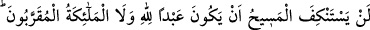
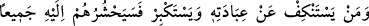
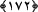

gözleri kamaşıp da karanlığı görmemesi gibi. Güneşe bakan kimse de başka bir şey
göremez. Fakat bu “görme”, gözün görmesi ya da cisimlerin görülmesi gibi değildir.
Aksine âlimlerin, kâmil velîlerin ve peygamberlerin (salevâtullahi aleyhim ecmaîn)
zikrettikleri gibidir.
Muvahhid, gerçekten muvahhid ise tevhid onu melekût, ceberût ve lahût alemlerine
ulaştırır. Yâni, muvahhid ikilikten, varlığa, cisimlere ve ruhlara bağlanıp kalmaktan
kurtulur. İşte o zaman “Allah ancak bir tek ilahtır” âyetinin sırrını müşâhede eder.
Allah’ım bizi o dereceye vâsıl olanlardan eyle, âmin.
172- Ne Mesih ne de Allah’a yakın melekler, Allah’ın kulu olmaktan geri dururlar.
O’na kulluktan geri durup büyüklenen kimselerin hepsini (Allah) yakında huzûruna
toplayacaktır.
Lügatte “istinkâf” bir şeye tenezzül etmemek, imtinâ etmek ve büyüklenmek
anlamlarına gelir. Dilimizde “burun kıvırma” olarak ifâde edilmektedir.
“Ne mesîh ve ne de Allah’a yakın melekler, Allah’ın kulu olmaktan geri dururlar.”
Çünkü O’na kul olabilmek, övünülecek bir şereftir, saygın bir meziyettir. Allah’a kul
olmaktan çekinip de başkalarına kul-köle olmak ise zillettir.
Rivayet edildiğine göre Necran’dan gelen hey’et Rasûlullah (s.a.v.)’e “Sâhibimizi
aşağılıyorsun” dediler. O da: “Sâhibiniz kimdir?” buyurdu. Onlar: “İsâ. dediler.
Rasûlullah (s.a.) Efendimiz: “Ben onun hakkında ne diyorum ki?” buyurdu. Onlar:
“O’nun Allah’ın kulu olduğunu söylüyorsun.” dediler. Bunun üzerine Allah Rasûlü
(s.a.v): “Allah’ın kulu olmak noksanlık değildir.” buyurdu. Onlar ise “Evet, bu bir
noksanlıktır.” dediler. Âyet, bu hâdise üzerine nâzil olmuştur.[217]
Mukarrabûn, yâni Allah’a yakın olan melekler, arşın etrafında bulunan Cebrâil,
Mîkâil, İsrâfil ve bunların derecesindeki melekler gibi kerûbiyyûn melekleridir.
“O’na kulluktan geri durup büyüklenen kimselerin hepsini Allah yakında huzûruna
toplayacaktır.” Allah kıyâmet günü yüz çevirenleri, büyüklenenleri, ikrar edenleri ve
itâat edenleri huzûrunda toplayacak, yaptıklarının karşılığını verecektir.
Kâfirlerin tamâmı, Allah’a itâat etmedikleri için Allah’a ibâdetten imtina edenlere
dâhildirler. “İstikbâr” yâni büyüklenmek, “istinkâf”den yâni burun kıvırmaktan bir
derece aşağıdır. Bu sebeple ona atfedilmiştir. İstinkâf, istikbârın aksine müstehak
olmayan yerde yapılan bir harekettir. Çünkü “istikbâr”, yerine göre müstehak bir hareket
olabilir.